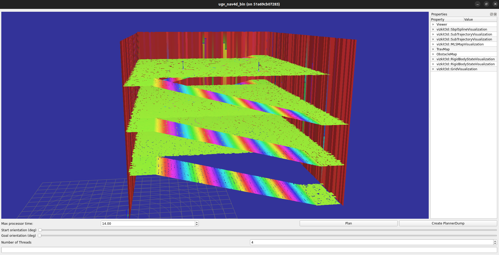
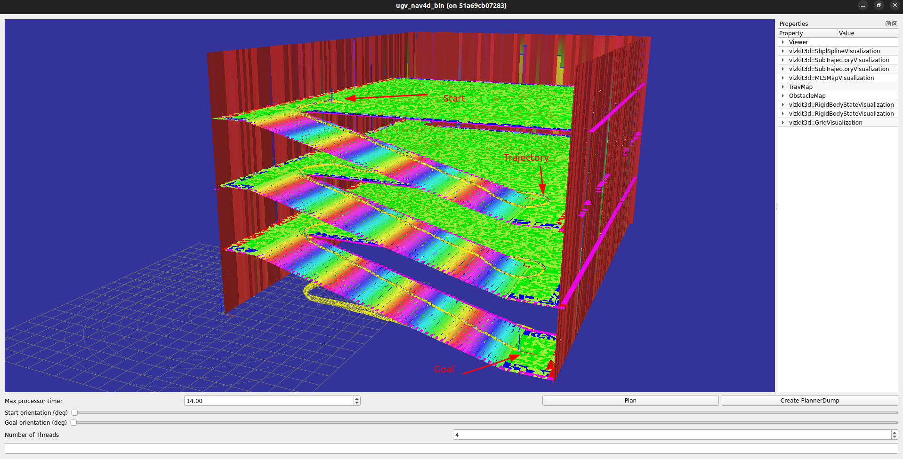
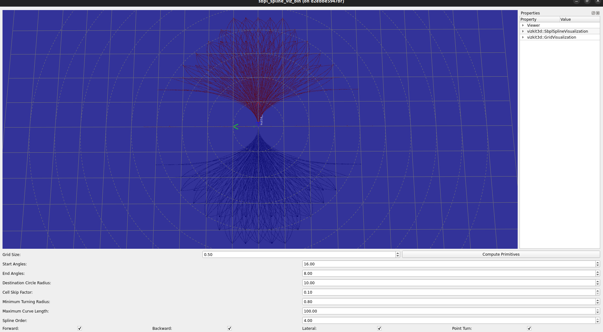

JOSS Paper: 
ugv_nav4d: Advanced Multi-Surface Navigation for Unmanned Ground Vehicles Using 4D Path Planning Techniques
A 4D (X,Y,Z, Theta) Planner for Unmanned Ground Vehicles.
<figure> </figure>
Statement of need
Accurate ground surface representation is crucial for ground-based robots in complex terrains. The ROS2 Navigation Stack, which uses voxel maps for 3D navigation, often loses detail and accuracy, especially in multi-storey environments, due to its discrete voxelization and separate costmaps for each floor.
We propose ugv_nav4d, a path planner that enhances environmental representation with Multi-Layered Surface Maps (MLS) and a 3D Traversability Map. Ugv_nav4d avoids the "stepping" effect of voxel maps by using a continuous grid and detailed vertical information, providing smoother and more accurate terrain modeling.
Unlike nav2, ugv_nav4d simplifies planning with a single TraversabilityMap3D, which contains detailed ground surface data, offering a superior alternative to nav2’s 3D costmaps. For users, MLS maps provide a smoother, more realistic view of terrain compared to the blocky voxel maps, enhancing navigation and decision-making in complex environments.
Documentation Index
To make the library easier to navigate, the documentation has been organized into modular guides:
- Implementation Details: In-depth technical architecture, state space representations, collision-checking pipelines, heuristics, and primitive spline details.
- ROS 2 Humble Simulation Environment Setup: Instructions for setting up Husky (Gazebo Fortress) and Turtlebot3 (Gazebo Classic) integration with Nav2.
- Parameter Tuning Guide: A comprehensive reference guide for all config variables found in
parameters.yaml.
Installation
Follow the steps to perform a standalone build of the library.
System Requirements
See install_os_dependencies.bash for further OS package requirements.
Get the library
Automatic Install of Dependencies & Build
Install dependencies automatically when building ugv_nav4d. Defining -DINSTALL_DEPS=ON for cmake builds and installs the source dependencies automatically. When -DCMAKE_INSTALL_PREFIX is used, the dependencies are also installed there. The install script generates an env.sh file in the CMAKE_INSTALL_PREFIX folder which exports all necessary environment variables.
Manual Installation of Dependencies & Build
Skip this step if you already installed dependencies automatically in the previous step.
Define a path_to_install_folder e.g. ./install where the dependencies will be installed:
After all dependencies have been installed, go back to the main folder to build and install ugv_nav4d:
Compiling inside a ROCK environment [Only for ROCK users]
See manifest.xml for an up-to-date list of dependencies. If you are a ROCK user, include the package set containing dfki-ric/orogen-ugv_nav4d in your autoproj manifest file.
API Documentation
The API documentation is available at https://dfki-ric.github.io/ugv_nav4d/
GUI Usage & Tests
Source the env.sh in the install folder.
Configuration
The planner GUI loads configuration from gui/config/parameters.yaml. This file contains default parameters for spline characteristics, vehicle mobility, traversability limits, and search heuristic configurations. See the Parameter Tuning Guide for detailed adjustment descriptions.
Running the GUI
Retrieve the test point cloud map and start the GUI:

A basic GUI is loaded with the Multi-layer Surface Map of a parking deck environment. Use the mouse left-click to select a start position and mouse right-click to select the goal position. The sliders can be used to change the orientations of start and goal positions. Click the button Plan to plan a path.

The button Create PlannerDump can be used to save the planner's state. The created file e.g., ugv4d_dump_xxxx.bin can be replayed using the executable ugv_nav4d_replay:
An additional GUI is provided for tuning parameters used in generating motion primitives and visualizing the generated splines.

Run the following executable in your terminal:
Unit Tests
Build the library with -DTESTS_ENABLED=ON enabled:
The test executables are located in the folder build/src/test/.
Bug Reports
To search for bugs or report them, please use the GitHub Issue-Tracker.